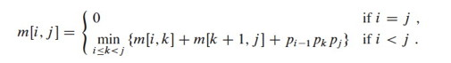
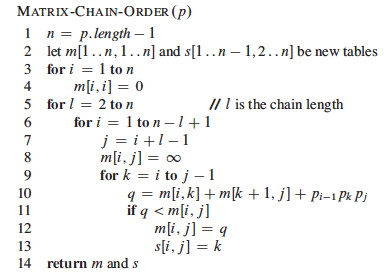
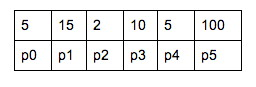
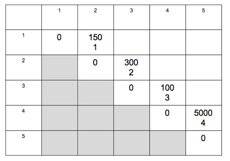

Please list the names of the other members of your peer group for this week and the number of extra credit points you think they deserve for their participation in group work on Tuesday and Thursday combined.
The Matrix Chain multiplication problem is the classic dynamic programming problem: every algorithms textbook I have seen uses it as an example. Thus you should at least be familiar with it, and this gives us a chance to get a feel for what a Dynamic Programming computation is like.
Read the Matrix Chain section of the book first (it's not in my lectures) so you understand the optimal substructure (page 373-374, summarized in formula 15.7) and how the matrices m and s function in the code.

Briefly: Given we have an optimal solution that includes the optimal choice of where to put the parentheses at the top level, the solutions to the subproblems of how to recursively parenthesize within each half must also be optimal, because otherwise we could substitute in a subproblem solution with fewer multiplications: the top level number of multiplications would not change, so there would be fewer multiplications overall, contradicting the assumption that the solution was optimal. But we don't know what the optimal top level choice is until we have solved all the subproblems: this is the min in the bottom half of formula 15.7. So we will compute the cost of multiplying each pair of matrices together, then optimize multiplying 3 matrices together, then optimize 4, on up to 5, building a table of the costs as we go.

The code is shown to the right. A table p of dimensions is given. The algorithm iterates for chains of length l, starting with 2. Variables i and j control the left and right boundaries of the chain, and k is the current split being considered. The algorithm records the minimal number of multiplications needed for each chain in matrix m, and where we split the chain into two with the parentheses in matrix s.
You will solve it for this chain:
A1(5x15), A2(15x2), A3(2x10), A4(10x5), A5(5x100)
The chain is represented by this table p:

I provide the solution and the full computations for l=2 below, and give you the template for the computations for l=3. You will:
(a) Fill out the computations for l=3, put the results in the table, and continue for l=4 and l=5 to complete the table.
(b) Write down the output of Print-Optimal-Parens(_s_,1,5) assuming the table you produced in (a) is _s_.

n = 5
---
l=2 // compute the optimal way to multiply each pair
// I demonstrate this for you
i=1, j=2, k=1:
q = m[1,1] + m[2,2] + p0*p1*p2
= 0 + 0 + 150
= 150
i=2, j=3, k=2:
q = m[2,2] + m[3,3] + p1*p2*p3
= 0 + 0 + 300
= 300
i=3, j=4, k=3:
q = m[3,3] + m[4,4] + p2*p3*p4
= 0 + 0 + 100
= 100
i=4, j=5, k=4:
q = m[4,4] + m[5,5] + p3*p4*p5
= 0 + 0 + 5000
= 5000
---
l=3 // compute the optimal way to multiply each triplet
// there will be more than one value of k: choose the minimum result
// this will indicate the top level parenthesization of the chain
i=1, j=3
k=1:
q = m[1,1] + m[2,3] + p0*p1*p3
=
k=2:
q = m[1,2] + m[3,3] + p0*p2*p3
=
i=2, j=4
k=2:
q = m[2,2] + m[3,4] + p1*p2*p4
=
k=3:
q = m[2,3] + m[4,4] + p1*p3*p4
=
i=3, j=5
k=3:
q = m[3,3] + m[4,5] + p2*p3*p5
=
k=4:
q = m[3,4] + m[5,5] + p2*p4*p5
=
---
l=4 // compute the optimal way to multiply each set of 4 matrices
What's the pattern? fill out as above, but now you go over 3 values of k.
---
l=5 // compute the optimal way to multiply all 5 matrices
// then you are ready to give the answer in part (b)
He has some numbers he is proud of (they seem to show up in nature a lot), but needs your help in generating and storing them. His first and second numbers are 1, and then each successive number is generated by adding up the previous two numbers. He has written a recursive procedure that generates these numbers:
Fibonacci (n)
if n < 2
return 1
else
return Fibonacci (n-1) + Fibonacci(n-2)
But it is very slow!
Explain to him the asymptotic complexity of his algorithm, as follows. (Formula A.5 will come in handy.)
(a) Draw the recursion tree.
(b) Identify these quantities:
(c) Then, assuming Θ(1) work at each vertex, how much work is in the tree, as determined by the upper and lower bounds on tree height and work per level that you just computed?
(a) Rewrite his algorithm to use dynamic programming, saving and re-using previous values rather than re-computing them: it's a simple iterative solution. (Did I mention that the solution is simple? If you are doing anything complicated you're over-thinking it.)
(b) What's the asymptotic complexity of your re-written algorithm? Justify your conclusion.
Now that we can efficiently generate his numbers, he has observed that certain configurations in the flowers in his garden occur with frequencies following his number. He has given each configuration letters. Configuration "A" and "B" occur only once. Configuration "C" occurs twice, "D" 3 times, "E" 5 times, "F" 8 times, "G" 13 times and "H" 21 times. Show him how he can encode his configurations with less space using Huffman coding.
(a) Draw the Huffman Tree for these first 8 letters using the observed frequencies.
Note: Assume a heap implementation of a min-priority queue where keys of
the same value come out in FIFO order. For example, when letters A and B are
merged to form a node of weight 2, the node for C of weight 2 will be dequeued
before that for A and B. This means that singletons will always be the left
child and subtrees the right child. Then you will get a prettier tree and the
pattern will be clear.
(b) If we extended this to n letters, describe the pattern for what the code will look like for any _ith Fibonacci number, _i ≤ n.
Dan Suthers Last modified: Wed Apr 16 14:38:28 HST 2014